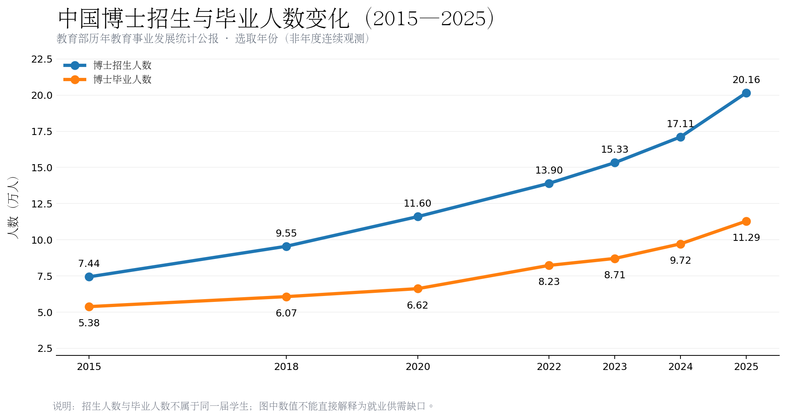
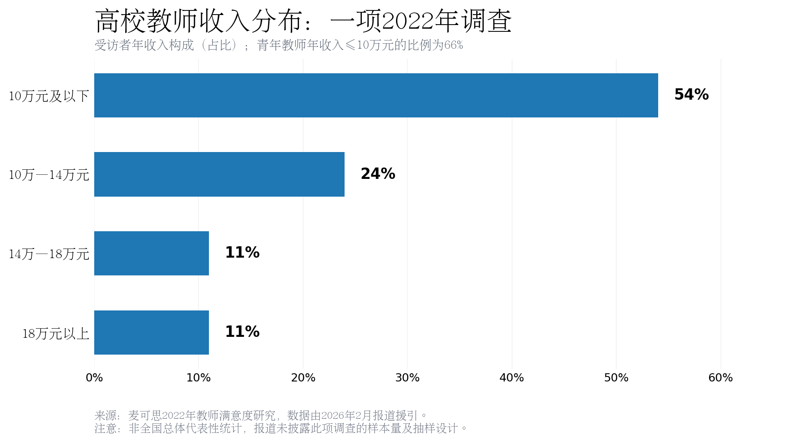

他人为镜，见人生万千可能。
我们花了数年时间系统学习如何做研究：提出问题、搜集资料、构建框架、分析数据、验证假设，一步步拆解外部世界的运行规律。但有一个与我们关联最紧密的课题，却往往研究得最浅 ——那就是我们自己。
我们研究企业、市场、消费者、组织与社会，却未必认真审视过自己的认知边界、能力结构、行为模式与人生选择。我们努力探索外部世界的确定性，却常常顺着外界给定的标准，按部就班地规划自己的人生。
尤其对硕博群体而言，论文、基金、职称、院校层次，慢慢构成了一套清晰又熟悉的评价体系。我们习惯了明确的游戏规则：不用多想方向，只要埋头打怪升级就好。 在这套体系里，我们熟练地学习如何成为优秀的竞争者，却常常忽略一个更根本的问题：除了在既定赛道上持续内卷，人生是否还有其他活法？
一、当更多博士走向同一市场
先看一组来自教育部《全国教育事业发展统计公报》的公开数据：
- 2015年，全国博士招生7.44万人，毕业5.38万人。
- 2020年，全国博士招生11.60万人，毕业6.62万人。
- 2025年，全国博士招生20.16万人，毕业11.29万人，在学博士达到75.36万人。
十年间，博士年招生规模增长约 171%，毕业规模增长约 110%；仅 2020 到 2025 年五年间，博士毕业生人数就增长了约 70.5%。博士人才的供给侧，已经发生了结构性的变化。

与此同时，高校岗位的吸纳能力、招聘门槛、薪酬待遇与引才政策，也在悄然转向。
2025 年底《三联生活周刊》的报道提到，部分地方高校正在缩减甚至取消安家费。有地方高校人事工作人员坦言：早年招四五十个岗位，要主动跑招聘会、托校友动员，还未必招得满；现在只需要发一则公告、参加几场线下双选会，一年就能收到五百多份简历，平均投录比达到 10:1。
不少从前动辄开出数十万安家费的地方院校，如今要么取消了这一项，要么把补贴与严苛的科研考核、漫长的服务年限深度绑定。2026 年 1 月《知识分子》的调查也指出，安家费正从 “入职福利” 异化为 “对赌筹码”：青年教师一旦考核未通过或提前离职，不仅要退还安家费，还可能面临高额违约金，代价从几十万到上百万不等。
薪资层面同样不容乐观。麦可思 2022 年的教师满意度研究显示，受访教师中年收入在 10 万元以内的占 54%，青年教师的这一比例更是达到 66%。公开报道中，地方高校青年教师税后月入 3000—5000 元的案例也并不鲜见。

当然必须说明：院校层次、所在城市、学科专业、岗位性质不同，待遇差异极大。博士扩招不代表所有高校岗位都在收缩，个别学校安家费下降，也不等于整个高教系统待遇普遍下滑。
但这些数据与现实至少给出了一个明确的信号：博士教育正在快速走向大众化，而教职岗位并不是一个可以无限扩容的蓄水池。
当越来越多人按照同一套标准积累成果、投递同一类岗位，竞争加剧几乎是必然结果；当评价标准高度趋同，就很容易陷入集体军备竞赛 —— 所有人都在追求更多论文、更高级别项目、更光鲜的履历，却很少停下来确认：自己是不是正在一条越来越拥挤的赛道上，消耗掉全部的选择权。
这当然不是说学术研究不值得坚持。真正值得警惕的是：当我们把所有时间、精力与人生预期，全部押注在同一套评价体系里，其实也把自己未来的选择权，完全交给了这套体系。
二、不把人生押在单赛道
我越来越认同一个判断：人生最核心的能力，是与不确定性共处的能力。
塔勒布在《黑天鹅》《反脆弱》里反复强调一个核心逻辑：世界充满了无法精准预测的重大冲击，我们不能只靠 “预测准未来” 来保障安全。这个判断放在职业发展上，同样成立。
如果一个人的知识结构、技能储备、社交网络与收入来源，全部依附于某一种职业身份、某一个平台、某一套评价标准，那么当行业收缩、规则调整、技术迭代时，他很可能突然发现：自己过去十几年积累的东西，换一个场景就几乎不被认可。这就是职业的脆弱性。
我们可以做一个最简单的思想实验：
- 甲的收入 100% 来自单一工作，一旦失去这份工作，短期劳动收入直接归零；
- 乙 70% 的收入来自主业，另外 30% 来自一项可独立运营、合法合规的业务，同样失去主业时，短期收入只下降 70%。
这只是极度简化的模型，真实风险还要考虑收入来源的相关性、储蓄负债、家庭支撑等诸多约束。但它指向一个朴素的道理：职业安全感从来不是某个岗位给的，而是你手里的能力、资源与选择权给的。
我希望自己成为一个有韧性，甚至逐步拥有反脆弱能力的人。所谓韧性，是遭遇冲击与变故时，能稳住生活基本盘、有能力调整方向、再慢慢恢复发展；而反脆弱更进一步：不仅能扛住变化，还能在持续的小范围尝试、学习与调整中，从变化里捕捉新机会、长出新能力。
当然，没人能在所有黑天鹅事件中获益。反脆弱不是无所不能，更不是盲目冒险。它的核心是：控制住可能造成不可逆损失的底线风险，同时保留接触新事物、尝试新方向的敞口。
我理解的 “不可替代” 是指不断搭建一套有独特性、可迁移、能适配不同场景的能力组合 —— 哪怕离开原来的平台、跳出熟悉的评价体系，你依然有能力创造价值。
个角度看，高校教师的工作形态，本身就接近超级个体户。
从课堂教学、日常行政，到论文写作、基金申报、横向课题对接，再到学生培养、团队管理，大量核心事务都需要独立操盘、全链路负责。我们常以为自己依附于机构与编制，却很容易忽略：这份工作一直在训练我们独立成事、多线作战的能力 —— 它更像一场体制框架内的个体创业演练。
也正因此，我们完全不必把职业身份死死绑定在高校教师这一个选项上。对受过完整学术训练的博士群体而言，人生路径本就多元：可以深耕象牙塔走教职路线，可以进入公共部门与国企，也可以走向产业与市场独立探索；即便始终留在高校体系内，不同的人也完全能走出截然不同的成长路线。
而观察多样的人生样本，意义正在于此——帮我们跳出身份的默认设置，看见更多隐藏的可能性。
三、研究更多人生样例的意义
世界很大，人生从来没有标准答案，只有无数个真实样本。
有人离开深耕多年的学科，跨界进入完全陌生的行业；有人没有接受过系统的学术训练，却靠长期自学、反复试错，练出了极强的专业能力；有人在商业实践里持续发现新机会，也有人在一次次失败里修正认知、重新出发。
他们未必有博士学位，但他们的人生经历，都是我们观察世界、拓展认知的一扇窗。
比如脑科学博士杨滢，从科研跨界到图书出版、消费品牌再到创业，她关于差异化竞争、非线性成长、实验式学习与持续破圈的思考，让我重新理解了科研能力与商业能力的共通之处。再比如李笑来，他的诸多观点与实践，也值得从自主学习、长期积累、能力迁移的角度去拆解和审视。
研究这些样本，从来不是为了复制谁的人生。恰恰相反，正是因为见过了足够多不同的活法，我们才更不容易被想当然的 “过来人经验”、行业惯例与群体共识所规训。他人是镜，对照的目的，是更清楚地看见自己 —— 我是谁、想成为什么样的人、想过什么样的生活、真正在意的是什么。
四、向内求索: 科学的研究自己
博士训练留给我们的，从来不该只是某个细分领域的专业知识。
更宝贵的，是发现问题的眼光、独立学习的能力、长期深耕的定力、批判思考的习惯、分析证据的方法，以及在不确定性中不断修正判断的素养。
既然我们花了这么多年，熟练掌握了一套研究世界的方法，为什么不把它也用在自己的人生上？研究自己的认知偏差，观察自己的行为模式，评估自己的能力结构，分析自己的职业选择。
面对一项新技术、一个陌生行业、一次潜在机会，我们不必立刻决定 “要不要投入一辈子”。完全可以像做预实验一样：先接触、先了解、先做一些成本可控的小尝试，在真实反馈里修正认知、积累经验，再决定要不要加大投入。
人生当然不是一场可以严格控制变量的实验。真实的个人发展，充满了正反馈、路径依赖、偶然机遇与不可观测因素。但我们依然可以靠认真记录、定期复盘、横向对比，一点点提高自己的判断质量。
我想做的，就是把科研里练出来的好奇心、钻研劲与方法论，迁移到自我成长这件事上。从研究世界，转向研究自己；从解释现实，转向主动探索并创造人生。
五、播下更多可能性的种子
今天接触到的一种商业模式，或许和当下的工作全无关联；
今天闯入视野的一个陌生行业，暂时带不来任何直接收益；
今天听到的一段人生经历，也未必会立刻改变我们的选择。
但人生的演进从来不是线性的。知识、技能、阅历、社会连接与时代机遇，各自在不同的时间节点沉淀积累，又总会在某个时刻悄然串联，迸发出意料之外的合力。
每一次看似偶然的际遇背后，往往是过往诸多条件长期共同作用的结果。这恰如芒格提出的洛拉帕卢扎效应：当多元的认知、经历与资源交织共振，多重因素相互催化、同向强化，最终催生的结果，会远远超出任何单一要素所能抵达的边界。
当然，积累不必然导向成功，坚持也未必总能等来增长的拐点。可如果始终困在熟悉的学科、熟悉的圈层、熟悉的职业路径里，我们又如何撞见那些原本不在认知范围内的机会？
我们无从预判哪一颗种子会在未来破土发芽，但可以持续拓宽知识的边界、丰富经验的厚度、夯实能力的底盘，为人生多留存一份可能性。而我做这个系列的初衷，也正是想和你一起，提前为未来播下这些种子。
六、培养持续找路的能力
对即将读博、正在读博、或正谋求教职中的朋友，我尤其希望这个系列能提供一点不一样的视角。
我不劝大家放弃学术研究，更不认为转行、创业就比做教授更高明。
如果愿意，我们完全可以在高校体系内把科研做一辈子。但更值得看见的是：这套发现问题、分析问题、解决问题的学术能力，本身就是通用的底层能力。它既可以支撑我们做好教职，也能生长出技术转化、产业咨询、公共治理、内容创作等完全不同的事业形态。
不同的人，有不同的兴趣禀赋、能力结构、资源条件与人生期待。不必都在同一套标准下争夺有限的位置，也不必靠模仿别人的成功，来证明自己的价值。
除了努力成为既定赛道上的优秀竞争者，我们还可以试着找到适合自己的独特方向，搭建一套别人难以复制的能力组合。
这一路径虽无法破解高校劳动力市场的结构性错配，却能在微观层面改善配置效率：差异化的能力组合构成了有效的人才诊断信号，能够降低用人单位的信息甄别成本，缓解因履历同质化导致的 “优中择优” 式过度筛选，同时也能提升个体的职业选择权与人力资本溢价。
《人生样本》就是这样一项长期观察与自我探索计划。
- 通过公开的视频、播客、文章与人物资料，记录不同人的经历、观点、实践与教训；
- 通过研究他人，拓展自己的认知边界；
- 通过审视自己，把新的知识、方法与机会，转化成实实在在的行动。
人生没有唯一的最优解。与其执念于寻找标准答案，不如持续打磨自己发现路径、选择方向、开辟赛道的能力。
这便是《人生样本》：以他人为镜，研究自己；以人生为课题，终身探索。
延伸阅读
- 教育部：2015年全国教育事业发展统计公报
- 教育部：2020年全国教育事业发展统计公报
- 教育部：2025年全国教育事业发展统计公报
- 三联生活周刊：消失的几十万高校安家费
- 知识分子：从“橄榄枝”到“学术贷”，正在消失的安家费背后
- 麦可思研究：高校青年教师待遇调查相关报道